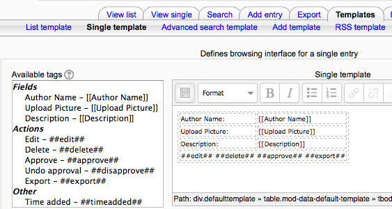

Templates for the Database activity module allow you to control the visual layout of information when listing, viewing or editing database entries. It is a similar to the technique used to mail merge letters in word processors such as Open Office Writer or Microsoft Word.
The content of each field you create for your database and some special tags (listed below) can be inserted into the output template by the use of tags.
Fields have the format [[fieldname]]. All other tags have the format ##sometag##.
To use the tags in the box on the left of the page, use the HTML viewer, place your cursor in the text area of your target edit and then click on the tag you want to place. Alternatively, you may simply type the appropriate name within the required symbols like ##this## or [[this]], respectively.
##edit## creates a clickable icon link that allows you to edit the current entry (only appears if you have the rights to do this)
##delete## creates a link that lets you delete the current entry (only appears if you have the rights to do this)
##approve## create a link that lets you approve the current database entry (only appears if you have the rights to do this)
##more## creates a link to the single view, which may contain more detailed info
##moreurl## creates just the URL for the above link, useful for creating your own links. You can click on the link icon and type ##moreurl## into URL field or in source view type
<a href=”##moreurl##”>[[fieldname]]</a> ##comments## creates a link to the view/edit comments page, the link text is the current number of comments (only appears if comments are turned on)
##user## creates a link to the user page of the user who submitted the entry, link text is their name
##timeadded##
##timemodified##
This template allows you to control the fields used and their layout when viewing multiple entries at once (e.g. search results). It is possible that this view may simply provide an overview with more detailed information available by clicking on an entry to access the single view of the entry.
This is used to display a single entry at a time and so has more space for display and can use, for example, larger versions of images or optionally provide more information than shown in the list view.
An advanced search template is for creating the interface form used in the advanced search.
This template creates the interface form used when adding or editing database entries.
Lets you control the content of the RSS feed for database entries.
If any of the HTML in your other templates requires CSS to provide visual style you can specify it here.
You can use javascript to manipulate the way elements are displayed in either the List, Single or Add templates. Basically you need to enclose the part you want to manipulate in some named html element. The naming is essential as it allows you to identify the element for manipulation.
Let’s say, for example, you have a field in your database that stores a person’s name and when you display the names in the List View you want to count the times a name matches some criteria and display the result.
When you first create a database the templates will be pre-filled with appropriate HTML. If you later add fields then you can press the reset templates button and it will add HTML for the new fields in a similar fashion. If you have edited any of the templates in the meantime then your changes will be lost. It is recommended that you finalize the database fields before changing the template code.